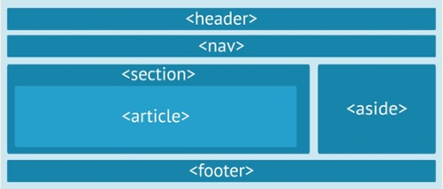

Etiquetas Semánticas

Nos encontraremos con las siguientes etiquetas como HEADER, ARTICLE, SECTION, ASIDE, FOOTER, NAV, FIGURE, TIME. Este tipo de etiquetas ayudan a que se defina la
estructura de un documento y permitirá que las páginas web sean mejores indexadas por los buscadores, este tipo de etiqueta se califica como semántica cuando
nos informe sobre que trata su contenido.
HEADER
Se utiliza como una introducción del elemento que la contiene. Si colocamos un HEADER en el BODY, a primer nivel, será una introducción o presentación de toda lapágina. Si colocamos un HEADER dentro de un SECTION, contendrá una introducción a esa sección. También se pueden colocar dentro de un ARTICLE
ARTICLE
Representa una unidad de contenido, es decir, contenido que responde a un tema concreto. El ejemplo más claro es un artículo dentro de una revista, por ejemplo,en una página de cocina, un ARTICLE sería cómo elaborar un determinado plato. En un foro, un ARTICLE sería un post, o entrada en el foro
SECTION
Una SECTION agrupa contenido con un tema común, por ejemplo, las diferentes partes de un periódico: política, sociedadASIDE
Esta etiqueta está diseñada para contenido tangencial, es decir, menos importante que el cuerpo de la página, y que suele ser de un tema relacionadoindirectamente (o no relacionado) con el tema principal.
FOOTER
Normalmente va al final de la página y contiene información del tipo: autor, copyright, contacto, mapa del sitio, etc. Se pueden poner HEADER y FOOTER dentro deSECTION y ARTICLE, aunque no es lo más normal. No hay nada prohibido, pero debe tener cierta lógica o sentido semántico
NAV
Esta etiqueta está pensada para contener la barra de navegación o los enlaces a las páginas del sitio web.El uso de las etiquetas semánticas es bastante simple e intuitivo, según las características de cada una que acabamos de ver. Realmente no existen normas fijas,
cada diseñador puede darles el uso que considere más apropiado. El único límite es el sentido común, no debemos perder de vista que los buscadores las
utilizarán para indexar la página, por lo tanto, nos interesa usar las etiquetas semánticas con la lógica para la que fueron diseñadas
AulaClic. (2015). ARTÍCULO 33: HTML5. Nuevas etiquetas semánticas. (I). Tomado de aulaclic.es: https://www.aulaclic.es/articulos/html5-semantica_1.html
AulaClic. (2015). ARTÍCULO 33: HTML5. Nuevas etiquetas semánticas. (II). Tomado de aulaclic.es: https://www.aulaclic.es/articulos/html5-semantica_2.html
AulaClic. (2015). ARTÍCULO 33: HTML5. Nuevas etiquetas semánticas. (III). Tomado de aulaclic.es: https://www.aulaclic.es/articulos/html5-semantica_3.html